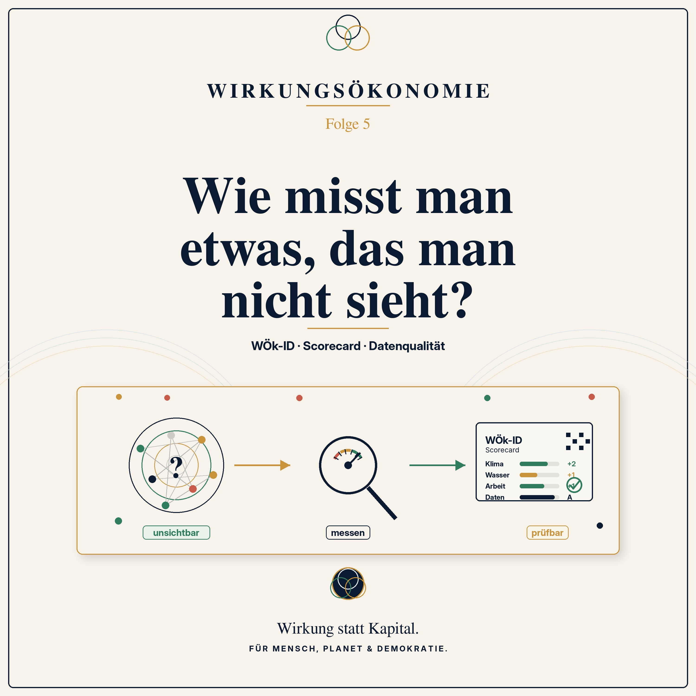

Podcast · Folge 5 · 22. Juni 2026 · 32:40
Wie misst man etwas, das man nicht sieht?
WÖk-ID, Scorecard und Datenqualität

 Wirkungsökonomie
Wirkungsökonomie
Podcast · Folge 5 · 22. Juni 2026 · 32:40
WÖk-ID, Scorecard und Datenqualität

Anhören
Wirkung ist oft unsichtbar.
Wir sehen ein Produkt. Wir sehen einen Preis. Wir sehen ein Etikett. Wir sehen vielleicht ein Nachhaltigkeitsversprechen. Aber wir sehen nicht sofort, wie viel CO₂ entstanden ist, wie viel Wasser verbraucht wurde, ob Menschen fair bezahlt wurden oder ob eine Lieferkette gesund, gerecht und zukunftsfähig ist.
In Folge 5 der Podcast-Reihe zur Wirkungsökonomie geht es deshalb um die Frage: Wie kann man Wirkung messen, ohne so zu tun, als ließe sich die ganze Welt perfekt berechnen?
Das Bild dieser Folge ist der Tacho im Auto. Geschwindigkeit kann man mit bloßem Auge nicht exakt sehen. Trotzdem haben wir ein gemeinsames Messinstrument gebaut, dem wir vertrauen. Ähnlich braucht auch eine Wirtschaft, die nach Wirkung steuern will, gemeinsame Instrumente: WÖk-IDs, Scorecards, Benchmarks, Datenqualität und Wirkungsdatenräume.
Diese Folge erklärt, wie aus unsichtbaren Folgen sichtbare Informationen werden. Was ist eine WÖk-ID? Was zeigt eine Scorecard? Warum ist Datenqualität so wichtig? Und was passiert, wenn Daten fehlen?
Ein zentraler Punkt ist die Reverse Merit Order: Das schwächste Wirkungsfeld entscheidet. Ein Produkt kann nicht einfach gute CO₂-Werte gegen schlechte Arbeitsbedingungen verrechnen. Kinderarbeit bleibt Kinderarbeit. Hoher Wasserstress bleibt hoher Wasserstress. Schlechte Wirkung darf nicht durch ein paar gute Punkte schöngerechnet werden.
Die Wirkungsökonomie behauptet nicht, Wirkung perfekt messen zu können. Aber sie sagt: Es ist besser, Unsicherheit ehrlich auszuweisen, als absichtlich blind zu bleiben.
Denn erst wenn Wirkung sichtbar wird, kann sie zurückwirken: in Preise, Steuern, Beschaffung, Kapital, Förderung und politische Entscheidungen.
Merksatz der Folge: Man kann nicht alles perfekt messen. Aber man kann aufhören, absichtlich blind zu bleiben.
Verknüpfungen
Transkript
Das Transkript macht die Folge auch als Text zugänglich und verknüpft zentrale Begriffe mit dem Glossar.
Stell dir vor, du sitzt in einem Auto.
Nicht auf einer Rennstrecke. Ganz normal. Vielleicht morgens auf dem Weg zur Arbeit. Vielleicht mit einem Kind auf dem Rücksitz, das fragt, ob ihr schon da seid. Draußen ziehen Bäume vorbei, Häuser, Ampeln, Menschen auf dem Bürgersteig.
Und vorne auf dem Armaturenbrett steht eine Zahl: 50.
Fünfzig Kilometer pro Stunde.
Jetzt kommt eine merkwürdige Frage: Wo sieht man diese Geschwindigkeit eigentlich?
Man sieht das Lenkrad. Man sieht die Straße. Man sieht, dass sich etwas bewegt. Man hört vielleicht den Motor oder das leise Summen eines Elektroautos. Aber die Geschwindigkeit selbst - die sieht man nicht wie einen Apfel auf dem Tisch.
Trotzdem verlassen wir uns auf diese Zahl.
Wenn dort 50 steht, wissen wir: Das passt innerorts. Wenn dort 90 steht, wissen wir: Jetzt ist es etwas anderes. Und wenn dort 130 steht, spüren wir: Da steckt deutlich mehr Energie, Risiko und Verantwortung drin.
Der Tacho ist keine Zauberei. Er macht etwas sichtbar, das wir nicht direkt greifen können. Er übersetzt Bewegung in eine Zahl, mit der Menschen, Regeln, Versicherungen, Polizei und Verkehrssysteme arbeiten können.
Und genau so ähnlich ist es mit Wirkung.
Wirkung klebt nicht als kleiner Zettel am Apfel. Sie liegt nicht sichtbar auf dem T-Shirt. Sie steht nicht automatisch auf einer Mietwohnung, auf einer Schulkantine, auf einer Steuererklärung oder auf einem Social-Media-Post.
Wirkung steckt in Veränderungen: Wird Wasser sauberer oder knapper? Wird Arbeit fairer oder ausbeuterischer? Wird Gesundheit gestärkt oder belastet? Wird Vertrauen aufgebaut oder zerstört? Wird der Planet stabiler oder verletzlicher? Wird Demokratie tragfähiger oder brüchiger?
Das sieht man nicht immer sofort.
Aber unsichtbar heißt nicht unmessbar.
Die Frage dieser Folge lautet deshalb: Wie misst man etwas, das man nicht sieht?
Und die Antwort ist nicht: mit irgendeiner Zahl.
Die Antwort ist: mit einem guten Instrument, mit klaren Fragen, mit ehrlichen Daten - und mit einer wichtigen Schutzregel.
Das schwächste Feld entscheidet.
Herzlich willkommen zur Wirkungsökonomie. Ich bin Natalie Weber, und dies ist Folge 5 unserer Reihe.
In den ersten vier Folgen haben wir den neuen Kompass vorbereitet.
In Folge 1 standen zwei Äpfel nebeneinander. Beide hatten ein Preisschild. Und wir haben gesehen: Der Preis an der Kasse erzählt nicht die ganze Wahrheit.
In Folge 2 ging es um den falschen Kompass. Kapital ist wichtig. Aber Kapital zeigt nicht, ob eine Entscheidung Mensch, Planet und Demokratie stärkt oder schwächt.
In Folge 3 haben wir gefragt, ob alles, was sich bewegt, auch wirklich leistet. Aus der Physik kam das Bild von Scheinleistung, Blindleistung und Wirkleistung. Nicht jede Aktivität erzeugt echte positive Veränderung.
Und in Folge 4 haben wir Wirkung von Absicht getrennt. Wirkung ist nicht, was wir wollen. Wirkung ist, was sich tatsächlich verändert. Eine gute Absicht kann gut wirken. Sie kann aber auch daneben gehen.
Heute kommt der nächste Schritt.
Wenn Wirkung tatsächliche Zustandsveränderung ist, dann müssen wir fragen: Wie wird diese Veränderung sichtbar? Wie unterscheiden wir echte Wirkung von schönem Schein? Wie messen wir, ohne die Welt kaputt zu vereinfachen?
Darum geht es heute: WÖk-ID, Scorecard, Datenqualität - und die Regel, die Greenwashing verhindert: Reverse Merit Order. Oder ganz einfach gesagt: Das schwächste Feld entscheidet.
Die naive Frage dieser Folge klingt ganz einfach:
Kann man Wirkung überhaupt messen?
Und dieser Einwand ist wichtig. Denn Wirkung ist nicht so einfach wie die Länge eines Brettes. Wenn ich wissen will, ob ein Brett einen Meter lang ist, nehme ich einen Zollstock. Fertig.
Aber wie messe ich, ob ein Apfel gut für den Boden ist? Wie messe ich, ob ein Unternehmen Menschen fair behandelt? Wie messe ich, ob ein Schulessen Kinder gesünder macht? Wie messe ich, ob ein Medienbeitrag Demokratie stärkt oder Misstrauen sät?
Das klingt erst einmal riesig.
Aber wir Menschen messen ständig Dinge, die wir nicht direkt sehen.
Temperatur zum Beispiel. Niemand sieht 38,5 Grad Fieber im Raum schweben. Wir sehen vielleicht rote Wangen, müde Augen, ein Kind, das schlapp auf dem Sofa liegt. Dann nehmen wir ein Thermometer. Das Thermometer ist nicht die Gesundheit des Kindes. Aber es gibt ein wichtiges Signal.
Oder Luftdruck. Oder Blutzucker. Oder elektrische Spannung. Oder Geschwindigkeit. Oder Kreditrisiken. Oder Wetterwahrscheinlichkeiten.
All das sind Messmodelle. Manche sind sehr präzise. Manche sind grober. Manche arbeiten mit Unsicherheit. Aber sie helfen uns, bessere Entscheidungen zu treffen.
Die Wirkungsökonomie sagt also nicht: Wir können die Welt perfekt ausrechnen.
Sie sagt: Wir können aufhören, absichtlich blind zu bleiben.
Wenn Menschen hören, dass man Wirkung messen will, entsteht manchmal ein falsches Bild.
Dann klingt es so, als wolle jemand die Welt in eine Excel-Tabelle sperren. Als solle alles, was lebendig, widersprüchlich und menschlich ist, auf eine Zahl reduziert werden.
Das wäre Unsinn.
Eine Zahl ersetzt kein Urteil. Eine Scorecard ersetzt keine Demokratie. Ein Messsystem ersetzt keine Erfahrung. Und ein Wirkungswert ersetzt nicht die Frage, was wir als Gesellschaft wirklich wollen.
Ein Tacho ersetzt ja auch nicht verantwortungsvolles Fahren. Er sagt nicht, ob Nebel ist. Er sagt nicht, ob ein Kind gleich auf die Straße läuft. Er sagt nicht, ob der Fahrer müde ist.
Aber ohne Tacho wäre Verkehr viel blinder.
Ein Fieberthermometer ersetzt keine Ärztin. Aber es hilft, einen Zustand einzuordnen.
Ein Wetterbericht ersetzt nicht den Himmel. Aber er hilft, den Regenschirm mitzunehmen.
So ist Wirkungsmessung in der Wirkungsökonomie zu verstehen: nicht als Weltformel, sondern als Rückmeldung.
Sie hilft uns zu sehen, ob unser Handeln in die richtige Richtung wirkt - oder ob wir nur hoffen, dass es das tut.
Bevor man Wirkung messen kann, muss man eine sehr einfache Frage stellen:
Welcher Zustand ist gemeint?
Das klingt banal. Ist es aber nicht.
Wenn ein Unternehmen sagt: Wir wollen nachhaltiger werden, ist das noch zu ungenau. Was soll sich verändern? Weniger CO2? Weniger Wasserverbrauch? Fairere Löhne? Weniger Chemikalien? Mehr Recycling? Mehr Biodiversität? Bessere Gesundheit? Mehr Transparenz?
Wenn eine Schule sagt: Wir wollen Bildung verbessern, ist auch das noch zu ungenau. Geht es um Lesekompetenz? Um Demokratieverständnis? Um digitale Mündigkeit? Um psychische Gesundheit? Um die Fähigkeit, Quellen zu prüfen?
Wenn eine Stadt sagt: Wir wollen gutes Wohnen ermöglichen, muss sie ebenfalls genauer werden. Geht es um Bezahlbarkeit? Um gesunde Gebäude? Um kurze Wege? Um Grünflächen? Um Hitzeresilienz? Um Integration? Um soziale Stabilität im Quartier?
Wirkung beginnt also nicht mit einer Zahl. Wirkung beginnt mit einer sauber gestellten Frage.
Die Wirkungsökonomie fragt: Welcher Zustand verändert sich - und für wen?
Denn Wirkung wirkt immer auf jemanden oder etwas: auf Menschen, auf Ökosysteme, auf Institutionen, auf Märkte, auf Demokratie, auf kommende Generationen.
Erst wenn klar ist, welcher Zustand gemeint ist, kann man überlegen, welcher Indikator dazu passt.
Jetzt kommt der erste Fachbegriff dieser Folge: die WÖk-ID.
Das klingt technisch. Ist aber eigentlich ein sehr einfaches Ordnungsprinzip.
Eine WÖk-ID ist wie ein Namensschild für eine Wirkungsfrage.
Stell dir eine große Bibliothek vor. Dort liegen nicht einfach tausende Bücher kreuz und quer auf dem Boden. Jedes Buch hat eine Signatur. Diese Signatur sagt: Dieses Buch gehört zu diesem Thema, steht in diesem Regal und ist auf diese Weise auffindbar.
Die WÖk-ID macht etwas Ähnliches für Wirkung.
Sie sagt: Hier geht es nicht allgemein um Nachhaltigkeit. Hier geht es ganz konkret um einen bestimmten Wirkungsaspekt. Zum Beispiel: CO2-Emissionen eines Produkts. Oder Wasserverbrauch in einer Stressregion. Oder Living-Wage-Abdeckung in der Lieferkette. Oder Arbeitsunfälle. Oder Datenqualität. Oder Medienqualität.
Ohne solche Namensschilder würden alle über Wirkung sprechen, aber jeder meint etwas anderes.
Der eine sagt Klima und meint den Stromverbrauch im Werk. Die andere sagt Klima und meint den Transport. Der nächste sagt fair und meint die Löhne im eigenen Unternehmen, aber nicht in der Lieferkette.
Die WÖk-ID sorgt dafür, dass die Frage eindeutig wird.
Nicht: Ist das Produkt irgendwie gut?
Sondern: Welche konkrete Wirkung betrachten wir, mit welchem Indikator, in welchem Bereich und mit welcher Datenquelle?
Das ist nicht Bürokratie um der Bürokratie willen. Es ist Sprachklarheit.
Denn ein System kann nur dann fair messen, wenn alle wissen, welche Frage gerade beantwortet wird.
Die zweite wichtige Idee ist die Scorecard.
Auch hier hilft wieder das Auto.
Vorne im Auto gibt es nicht nur den Tacho. Es gibt auch Tankanzeige oder Batteriestand, Warnleuchten, Temperatur, vielleicht Reifendruck, Kilometerstand, Navigationshinweise.
Warum?
Weil Geschwindigkeit allein nicht reicht, um ein Auto sicher zu fahren.
Wenn du 50 fährst, aber der Motor überhitzt, ist das ein Problem. Wenn du 50 fährst, aber die Bremsen kaputt sind, ist das ein viel größeres Problem. Wenn du 50 fährst, aber kein Licht hast, wird es nachts gefährlich.
Eine Scorecard ist so ein Instrumentenbrett für Wirkung.
Sie zeigt nicht nur eine einzige Zahl. Sie zeigt mehrere Wirkungsfelder nebeneinander.
Bei Produkten können das zum Beispiel Klima, Ressourcen und Kreislauf, Arbeit und Fairness, Gesundheit und Sicherheit sein. Je nach Produkt kommen weitere Felder dazu: Wasser, Biodiversität, Lieferkette, Datenqualität, Demokratie oder regionale Wirkung.
Beim Apfel geht es vielleicht um Wasser, Boden, Pestizide, Transport, faire Arbeit und Biodiversität.
Beim T-Shirt geht es um Baumwolle, Chemikalien, Wasser, Löhne, Arbeitsrechte, Transport und Haltbarkeit.
Bei einer Wohnung geht es um Miete, Energie, Gesundheit, Quartier, Flächenverbrauch und soziale Stabilität.
Bei einem Medienbeitrag geht es nicht um CO2 pro Kilogramm, sondern um andere Fragen: Quellenklarheit, Faktennähe, Korrekturbereitschaft, Tonalität, Polarisierungsrisiko, demokratische Resonanz.
Das ist wichtig: Die Wirkungsökonomie misst nicht alles mit demselben Lineal.
Äpfel werden nicht wie Krankenhäuser bewertet. Krankenhäuser nicht wie Social-Media-Posts. Und Social-Media-Posts nicht wie Stahlbeton.
Darum braucht es Zuordnung, Benchmarks und Kontexte.
Damit man fair messen kann, muss man wissen, womit man etwas vergleicht.
Ein Apfelbaum ist keine Zementfabrik. Ein Krankenhaus ist kein Modehändler. Eine Schule ist kein Rechenzentrum.
Deshalb braucht die Wirkungsökonomie eine Art Landkarte der Wirtschaft. Eine solche Landkarte gibt es bereits: die NACE-Codes. Das sind offizielle Klassifikationen für wirtschaftliche Tätigkeiten.
Der Begriff muss niemanden erschrecken. Man kann es sich einfacher vorstellen:
NACE sagt: In welcher Schublade liegt diese Tätigkeit?
Kernobstbau. Textilproduktion. Stromerzeugung. Krankenhausbetrieb. Wohnungswirtschaft. Chemische Produktion. Medienplattform.
Wenn klar ist, in welcher Schublade eine Tätigkeit liegt, kann man entscheiden, welche Wirkungsfragen dafür relevant sind.
Beim Apfel sind Wasser, Boden, Arbeit, Transport und Biodiversität wichtig. Bei einem Rechenzentrum eher Stromverbrauch, Kühlung, Datenschutz, Hardware-Lieferketten und Resilienz. Bei einer Mietwohnung Bezahlbarkeit, Energie, Gesundheit, Quartier und soziale Stabilität.
Dann kommen Benchmarks ins Spiel.
Ein Benchmark ist ein Vergleichswert. Er sagt: Was ist in diesem Bereich schlecht, normal, gut oder transformativ?
Ohne Benchmark wäre eine Zahl fast wertlos.
Wenn ich sage: Dieser Apfel hat einen bestimmten Wasserfußabdruck, musst du wissen: Ist das viel oder wenig? In welcher Region? Bei welchem Klima? Mit welcher Anbaumethode? In welchem Jahr?
Benchmarks verhindern, dass wir Äpfel mit Stahlbeton vergleichen.
Sie machen Messung fairer. Nicht perfekt. Aber fairer.
Wenn die Daten da sind und der Vergleich stimmt, braucht man eine verständliche Einordnung.
In der Wirkungsökonomie geschieht das häufig über eine Skala. Vereinfacht gesagt: von negativ über neutral bis positiv. In technischen Modellen kann das zum Beispiel von -3 bis +3 reichen.
Minus bedeutet: Dieses Wirkungsfeld schadet. Null bedeutet: neutral oder noch kein relevanter positiver Effekt. Plus bedeutet: Dieses Feld wirkt positiv im Referenzrahmen von Mensch, Planet und Demokratie.
Ganz oben steht nicht einfach gut, sondern transformativ.
Transformativ heißt: Etwas ist nicht nur ein bisschen weniger schlecht. Es verändert einen Pfad. Es ersetzt eine schädliche Lösung. Es verschiebt Standards. Es hilft, das System in eine bessere Richtung zu bewegen.
Ein Produkt mit weniger Verpackung ist vielleicht besser als vorher. Ein Produkt, das Verpackungskreisläufe wirklich schließt, wirkt stärker.
Ein Unternehmen, das seinen Stromverbrauch ein wenig senkt, verbessert sich. Ein Unternehmen, das eine ganze Lieferkette auf erneuerbare Energie und faire Arbeit umstellt, verändert mehr.
Die Skala ist also kein Schönheitswettbewerb.
Sie ist ein Richtungssignal.
Sie sagt: Wirkt etwas gegen den gemeinsamen Referenzrahmen? Bleibt es ungefähr neutral? Oder zahlt es wirklich auf Mensch, Planet und Demokratie ein?
Jetzt kommt ein Punkt, der trocken klingt, aber für Vertrauen entscheidend ist: Datenqualität.
Denn nicht jede Zahl ist gleich gut.
Manche Zahlen sind direkt gemessen. Manche sind geprüft. Manche sind aus Lieferantendaten übernommen. Manche sind geschätzt. Manche stammen aus Durchschnittswerten. Und manchmal fehlt eine Zahl ganz.
In einem ehrlichen System darf das nicht alles gleich behandelt werden.
Stell dir vor, jemand verkauft dir ein gebrauchtes Auto.
Auf die Frage, ob die Bremsen funktionieren, sagt er: „Bestimmt. Hat der Vorbesitzer mal so gesagt.“
Das ist eine andere Datenqualität als ein aktueller Werkstattbericht.
Oder stell dir eine Brücke vor. Wenn niemand weiß, ob sie einen schweren Lkw trägt, dann sagt man nicht: Wir nehmen einfach an, dass alles in Ordnung ist. Man prüft. Und wenn man noch nicht geprüft hat, gilt Vorsicht.
Genauso muss es bei Wirkungsdaten sein.
Eine gemessene, auditierte Zahl ist stärker als eine grobe Schätzung. Eine Schätzung kann trotzdem nützlich sein - aber sie muss als Schätzung erkennbar sein. Eine Datenlücke darf nicht zum Vorteil werden.
Das ist ein wichtiger Grundsatz:
Wer keine Daten liefert, darf nicht automatisch besser dastehen als jemand, der ehrlich misst und dabei auch Probleme sichtbar macht.
Sonst würde das System Fleiß bestrafen und Wegsehen belohnen.
Deshalb braucht Wirkungsmessung Datenqualitätsklassen. Also eine klare Kennzeichnung: Wie sicher ist diese Information? Woher kommt sie? Wann wurde sie erhoben? Wurde sie geprüft? Ist sie aktuell? Ist sie vollständig?
Unsicherheit ist kein Scheitern.
Unsicherheit wird erst gefährlich, wenn sie versteckt wird.
In der Wirkungsökonomie geht es nicht darum, so zu tun, als wüssten wir alles.
Das wäre falsch. Und es wäre gefährlich.
Manchmal fehlen Daten. Manchmal sind Lieferketten unübersichtlich. Manchmal gibt es Messgrenzen. Manchmal ist eine Wirkung indirekt, verzögert oder schwer zuzurechnen.
Gerade bei Medien, Bildung, Gesundheit oder Demokratie kann Wirkung nicht immer so direkt gemessen werden wie CO2 pro Kilogramm.
Aber auch dann ist Nichtwissen nicht nichts.
Nichtwissen ist eine Information über das Risiko.
Wenn ein Unternehmen nicht weiß, ob in einer Lieferkette Kinderarbeit vorkommt, ist das nicht dasselbe wie: Es gibt keine Kinderarbeit.
Wenn eine Plattform nicht weiß, ob ihr Algorithmus Desinformation verstärkt, ist das nicht dasselbe wie: Der Algorithmus ist harmlos.
Wenn eine Stadt nicht weiß, ob eine Sanierung Menschen verdrängt, ist das nicht dasselbe wie: Es gibt keine soziale Nebenwirkung.
Datenlücken müssen sichtbar werden. Nicht als moralische Anklage, sondern als Warnleuchte.
Wie im Auto: Wenn eine Warnlampe angeht, heißt das nicht automatisch, dass der Motor explodiert. Aber es heißt: Schau hin. Prüfe. Fahr nicht einfach blind weiter.
Jetzt kommen wir zu einer der wichtigsten Regeln der Wirkungsökonomie.
Sie klingt zuerst streng. Aber eigentlich ist sie sehr lebensnah.
Das schwächste Feld entscheidet.
In der Fachsprache heißt das Reverse Merit Order. Man kann auch sagen: Nichtkompensation.
Gemeint ist: Schwere negative Wirkung darf nicht durch positive Wirkung an anderer Stelle einfach schön gerechnet werden.
Stell dir ein Auto vor.
Es hat sehr gute Sitze. Es verbraucht wenig Strom. Die Lackierung ist schön. Das Radio klingt fantastisch. Der Kofferraum ist groß.
Aber die Bremsen funktionieren nicht.
Würdest du sagen: Insgesamt ist das Auto trotzdem ziemlich gut? Schließlich hat es ja viele positive Eigenschaften?
Natürlich nicht.
Bei Sicherheit entscheidet nicht der Durchschnitt. Die kaputten Bremsen sind ein Stoppsignal.
Oder stell dir ein Boot vor. Das Segel ist neu. Der Motor ist gut. Die Küche ist sauber. Aber im Rumpf ist ein Loch.
Auch dann sagt niemand: Im Durchschnitt ist das Boot seetüchtig.
Ein Loch im Boot wird nicht besser, nur weil das Segel schön ist.
So funktioniert Reverse Merit Order.
Ein T-Shirt mit Bio-Baumwolle, aber Kinderarbeit, bleibt schädlich.
Ein Wohnprojekt mit guter Klimabilanz, aber massiver Verdrängung, bleibt problematisch.
Ein Unternehmen mit schönen Diversitätskampagnen, aber zerstörerischer Lieferkette, kann sich nicht positiv bilanzieren.
Ein Medienformat mit hoher Reichweite, aber systematischer Desinformation, wird nicht dadurch gut, dass es viele Menschen erreicht.
Das schwächste zentrale Wirkungsfeld begrenzt die Bewertung.
Warum ist das so wichtig?
Weil sonst ein Markt für Ablasshandel entsteht.
Dann könnte man sagen: Ja, wir haben schlechte Arbeitsbedingungen, aber dafür sparen wir CO2. Oder: Ja, wir zerstören Biodiversität, aber dafür spenden wir an ein Bildungsprojekt. Oder: Ja, unser Algorithmus spaltet die Gesellschaft, aber wir pflanzen Bäume.
Die Wirkungsökonomie sagt: Nein.
Gute Wirkung ist wichtig. Aber sie löscht schwere negative Wirkung nicht aus.
Nicht alles ist verrechenbar.
Auf den ersten Blick klingt diese Regel hart.
Aber sie ist fair.
Denn sie schützt diejenigen, die wirklich sauber arbeiten.
Wenn ein Unternehmen seine Lieferkette mühsam fair macht, Wasser spart, Emissionen senkt und gefährliche Chemikalien ersetzt, dann soll es nicht mit einem Unternehmen gleichgesetzt werden, das nur eine einzelne gute Kennzahl herausstellt und den Rest versteckt.
Reverse Merit Order schützt also nicht nur die Gesellschaft vor Greenwashing.
Sie schützt auch ehrliche Unternehmen vor unehrlichem Wettbewerb.
Sie sagt: Wer ein Problem hat, soll es nicht verstecken. Er soll es verbessern.
Das ist der Unterschied zwischen Schuld und Lernen.
Die Wirkungsökonomie will nicht sagen: Wer einmal schlecht abschneidet, ist für immer verloren.
Sie sagt: Hier ist der Engpass. Hier musst du ran. Wenn du dieses Feld verbesserst, verbessert sich dein gesamter Wirkungspfad.
Das ist wie bei einer Kette. Eine Kette ist nur so stark wie ihr schwächstes Glied. Wenn du die Kette stärker machen willst, polierst du nicht das stärkste Glied. Du verstärkst das schwache.
Genau deshalb gehört das schwächste Feld zur Messlogik.
Es zeigt nicht nur, wo etwas schlecht ist. Es zeigt, wo Transformation beginnen muss.
Kehren wir noch einmal zum Apfel zurück.
In Folge 1 standen zwei Äpfel nebeneinander. Ein regionaler Apfel und ein weit gereister Apfel. Das war ein gutes Einstiegsbild, weil jeder sofort versteht: Ein Preis kann gleich aussehen, obwohl die Wirkung völlig verschieden ist.
Aber jetzt, in Folge 5, müssen wir genauer werden.
Regional ist nicht automatisch gut. Und importiert ist nicht automatisch schlecht.
Ein regionaler Apfel kann sehr gut wirken: kurze Transportwege, guter Bodenaufbau, faire Arbeit, wenig Pestizide, lebendige Biodiversität.
Er kann aber auch problematisch sein, wenn der Boden ausgelaugt wird, Pestizide stark eingesetzt werden, Saisonarbeit schlecht bezahlt ist oder Kühlung sehr energieintensiv läuft.
Ein importierter Apfel kann hohe Transportemissionen, Wasserstress oder schlechte Arbeitsbedingungen mitbringen. Er kann aber auch in bestimmten Jahreszeiten besser abschneiden als ein monatelang gekühlter Apfel aus der Region.
Deshalb reicht Herkunft allein nicht.
Die Wirkungsökonomie fragt nicht: Woher kommt der Apfel?
Sie fragt: Welche Wirkung hat dieser konkrete Apfel in seinem konkreten Produktions- und Lieferkontext?
Dafür braucht es die Scorecard.
Klima. Wasser. Boden. Arbeit. Gesundheit. Biodiversität. Datenqualität.
Und wenn ein Feld deutlich negativ ist, zieht es die Bewertung nach unten.
Das ist nicht gegen regionale Landwirtschaft. Im Gegenteil. Es schützt sie vor bloßer Romantik und macht ihre tatsächliche gute Wirkung sichtbar.
Ein regionaler Apfel soll nicht gut heißen, weil regional schön klingt.
Er soll gut heißen, wenn er gut wirkt.
Nehmen wir ein zweites Beispiel: eine Schulkantine.
Heute lautet die entscheidende Frage bei Ausschreibungen oft: Wer liefert am günstigsten?
Das ist verständlich. Schulen und Kommunen haben knappe Budgets. Aber die billigste Mahlzeit ist nicht automatisch die beste Lösung.
Denn ein Schulessen wirkt auf viele Zustände zugleich.
Es wirkt auf die Gesundheit der Kinder. Auf Konzentration. Auf Lernfähigkeit. Auf regionale Landwirtschaft. Auf Lieferketten. Auf Tierwohl. Auf CO2. Auf Verpackung. Auf Esskultur. Auf soziale Teilhabe, weil alle Kinder gemeinsam essen.
Wenn man nur den Preis misst, bleibt der größte Teil dieser Wirkung unsichtbar.
Eine Wirkungs-Scorecard für Schulessen würde nicht sagen: Essen muss teuer sein.
Sie würde fragen: Welche Wirkung erzeugt dieses Essen?
Wie ausgewogen ist es? Wie viele regionale oder ökologische Zutaten werden verwendet? Wie hoch ist der Anteil pflanzlicher Gerichte? Wie fair sind die Arbeitsbedingungen? Wie viel Abfall entsteht? Wie gut wird Essen tatsächlich angenommen? Wie viele Kinder werden erreicht?
Und auch hier gilt: Wenn ein Anbieter in einem zentralen Feld sehr schlecht ist, kann er das nicht einfach mit einem schönen anderen Wert ausgleichen.
Ein gesundes Menü mit ausbeuterischer Lieferkette ist kein gutes Menü.
Ein klimafreundliches Essen, das Kinder nicht essen, wirkt ebenfalls nicht wie geplant.
Messung hilft also nicht nur beim Bewerten. Sie hilft beim Lernen.
Die Kantine kann besser werden. Die Kommune kann besser ausschreiben. Anbieter können ihre Lieferketten verbessern. Kinder können beteiligt werden. Der Staat kann öffentliche Mittel wirkungsvoller einsetzen.
Das ist der praktische Sinn von Wirkungsmessung.
Jetzt könnte man sagen: Viele dieser Daten gibt es doch schon.
Genau.
Unternehmen berichten heute bereits über Emissionen, Wasser, Energie, Arbeitsbedingungen, Lieferketten, Risiken und Governance. Es gibt Standards. Es gibt Nachhaltigkeitsberichte. Es gibt Audits. Es gibt Daten, die immer strukturierter werden.
Das Problem ist nicht, dass wir gar nichts wissen.
Das Problem ist, dass Wissen oft nicht zurückwirkt.
Eine Zahl steht im Bericht. Eine Grafik steht in einer Präsentation. Eine Kennzahl liegt im Anhang. Aber der Preis bleibt gleich. Die Steuer bleibt gleich. Die Beschaffung bleibt gleich. Der Kapitalzugang bleibt gleich. Die Entscheidung bleibt gleich.
Dann ist Messung noch keine Steuerung.
In der Wirkungsökonomie ist das anders gedacht.
Wirkungsdaten sollen nicht nur beschrieben werden. Sie sollen rückgekoppelt werden.
Das heißt: Sie wirken zurück in Preise, Steuern, öffentliche Beschaffung, Kapitalflüsse, Versicherbarkeit, Förderung, Unternehmenssteuerung und politische Entscheidungen.
Aber bevor etwas rückgekoppelt werden kann, muss es sichtbar, nachvollziehbar und prüfbar sein.
Genau deshalb ist Folge 5 so wichtig.
Sie ist die Brücke zwischen dem Begriff Wirkung und der späteren Architektur der Wirkungsökonomie.
Natürlich kommt hier sofort die Sorge: Wird das nicht ein riesiges Bürokratie-Monster?
Die Sorge ist berechtigt. Denn wenn jedes Ministerium, jede Bank, jede Versicherung, jeder Kunde und jede Behörde eigene Fragebögen baut, dann entsteht Chaos.
Das wäre die schlechteste Version von Wirkungsmessung.
Die bessere Version lautet: einmal sauber erheben, mehrfach nutzen.
Ein Wirkungsdatenraum kann dafür sorgen, dass Daten nicht fünfzigmal neu abgefragt werden. Ein digitaler Produktpass kann Informationen entlang der Lieferkette mitnehmen. WÖk-IDs sorgen dafür, dass alle dieselbe Wirkungsfrage meinen. Datenqualitätsklassen zeigen, wie belastbar eine Zahl ist.
Das Ziel ist nicht: mehr Papier.
Das Ziel ist: weniger Blindleistung.
Heute entsteht sehr viel Bürokratie, weil das System am falschen Ende repariert.
Erst entstehen falsche Preise. Dann braucht es Förderprogramme. Dann braucht es Nachweise. Dann Ausnahmen. Dann Kontrollen. Dann neue Formulare. Dann neue Beratungen. Dann neue Berichte.
Die Wirkungsökonomie setzt früher an.
Wenn Wirkung im Grundsignal sichtbar wird, braucht man weniger Flickwerk hinterher.
Das ist kein Versprechen, dass es gar keine Verwaltung mehr gibt. Gute Verwaltung bleibt wichtig. Prüfung bleibt wichtig. Rechtsschutz bleibt wichtig.
Aber die Verwaltung soll nicht mehr ständig Symptome reparieren, die aus falschen Signalen entstehen.
Sie soll bessere Rückkopplungen bauen.
Gerade weil Wirkungsmessung mächtig werden kann, braucht sie klare Grenzen.
Erstens: Sie darf nicht so tun, als sei sie unfehlbar.
Wirkung bleibt komplex. Messung muss Unsicherheit ausweisen, nicht verstecken.
Zweitens: Sie darf nicht private Moral als objektive Wahrheit verkleiden.
Die Wirkungsökonomie braucht einen transparenten Referenzrahmen: Mensch, Planet und Demokratie, operationalisiert über SDGs, Agenda 2030 und SDG+. Was positiv oder negativ ist, muss nachvollziehbar begründet werden.
Drittens: Sie darf Menschen nicht als ganze Person bewerten.
Das ist wichtig.
Die Wirkungsökonomie bewertet Produkte, Prozesse, Tätigkeiten, Organisationen, Kapitalflüsse, öffentliche Maßnahmen, Strukturen und Wirkungsräume. Sie darf nicht zum Social-Credit-System werden, das Menschen als Personen sortiert.
Viertens: Sie darf nicht so kompliziert werden, dass nur große Konzerne sie bewältigen können.
Kleine Unternehmen, Kommunen, Vereine und soziale Träger brauchen einfache, proportionale Wege. Nicht jedes Bäckereibrötchen braucht eine Doktorarbeit.
Fünftens: Sie muss lernfähig sein.
Benchmarks ändern sich. Daten werden besser. Fehler werden sichtbar. Neue Risiken entstehen. Deshalb muss Wirkungsmessung versioniert, überprüft und weiterentwickelt werden.
Ein Messsystem, das nicht lernen kann, wird selbst zur Blindleistung.
Was bedeutet das politisch?
Zunächst einmal: Der Staat muss nicht jedes Produkt, jede Wohnung, jede Kantine und jedes Unternehmen einzeln moralisch beurteilen.
Er muss die Mess- und Rückkopplungsarchitektur festlegen.
Also: Welche Wirkungsfelder sind relevant? Welche Daten werden genutzt? Welche Benchmarks gelten? Wie wird Datenqualität bewertet? Wer prüft? Wie werden Einsprüche möglich? Wie wird verhindert, dass Lobbyinteressen die Maßstäbe verbiegen?
Das klingt nach viel. Aber es ist eine andere Art von Staat.
Nicht der Staat als Reparaturkolonne, die jedem Problem hinterherläuft.
Sondern der Staat als Rückkopplungsarchitekt.
Er baut ein System, in dem bessere Wirkung sichtbar wird und schlechtere Wirkung nicht länger versteckt bleibt.
Dann kann später passieren, worüber wir in den nächsten Folgen noch sprechen werden:
Öffentliche Beschaffung kann nach Wirkung auswählen.
Steuern können nach Wirkung differenzieren.
Kapital kann nach Wirkung fließen.
Unternehmen können Wirkung in Strategie und Controlling einbauen.
Bürgerinnen und Bürger können bessere Informationen bekommen, ohne perfekte Konsumenten sein zu müssen.
Aber heute geht es noch nicht um die vollständige Steuerlogik.
Heute geht es um die Voraussetzung:
Wirkung muss sichtbar werden. Und sie muss so sichtbar werden, dass sie nicht gefälscht, schön gerechnet oder versteckt werden kann.
Wenn man diese Folge auf einen Satz bringen müsste, dann wäre es dieser:
Man kann Wirkung messen, ohne sie zu fälschen - und das schwächste Feld entscheidet.
Oder noch kürzer:
Messen heißt nicht, die Welt zu vereinfachen. Messen heißt, nicht blind zu bleiben.
Das ist der Kern.
Eine WÖk-ID stellt die richtige Frage.
Eine Scorecard ordnet mehrere Wirkungsfelder nebeneinander.
Datenqualität zeigt, wie belastbar eine Zahl ist.
Benchmarks verhindern unfairen Vergleich.
Und Reverse Merit Order verhindert, dass schwere Schäden durch schöne Werte an anderer Stelle überdeckt werden.
Das ist die Messlogik der Wirkungsökonomie.
Am Anfang dieser Folge saßen wir im Auto und haben auf den Tacho geschaut.
Wir haben gesehen: Manche Dinge sieht man nicht direkt. Aber man kann Instrumente bauen, die sie sichtbar machen.
Wirkung ist ähnlich.
Sie ist nicht immer direkt sichtbar. Aber sie verändert Zustände. Sie verändert Wasser, Boden, Gesundheit, Arbeit, Vertrauen, Demokratie und Zukunft.
Wenn wir diese Veränderungen nicht messen, steuern wir weiter nach dem, was am leichtesten sichtbar ist: Preis, Gewinn, Umsatz, Reichweite, Menge, Bewegung.
Dann landen wir wieder bei Scheinleistung.
Die Wirkungsökonomie will nicht alles perfekt berechnen.
Sie will etwas Einfacheres und zugleich Anspruchsvolleres:
Sie will die entscheidenden Folgen sichtbar genug machen, damit Wirtschaft, Politik und Gesellschaft daraus lernen können.
Und jetzt kommt die nächste Frage.
Warum ist das gerade jetzt so wichtig?
Warum reicht es nicht, irgendwann in Ruhe ein bisschen besser zu messen?
Weil wir mitten in einer großen Transformationswelle stehen: Nachhaltigkeit, KI, Robotik, Gesundheit, neue Arbeit, neue Energie, neue Lieferketten. Diese Welle kommt nicht irgendwann. Sie läuft schon.
In der nächsten Folge sprechen wir deshalb über den langen Wellenschlag der Wirtschaft. Über große Entwicklungswellen. Über den sechsten Kondratieff. Und über die Frage, ob diese Transformation uns trägt - oder überrollt.
Der Apfel war der Anfang.
Jetzt bauen wir das Instrument, mit dem wir sehen können, wohin die Reise geht.
Bis zur nächsten Folge.